CODING AGENTS AS PIXEL WORLD MODELS
traex/GPT-6.1-Sol · common50_0007
点击播放 · 原生 RGB 像素
逐轮保存的候选
回放视频、检查图与代码变化。
每份候选均可单独播放。实际图片检查记录在下方工具轨迹中。
候选 01播放与检查图
点击播放 · 原生 RGB 像素

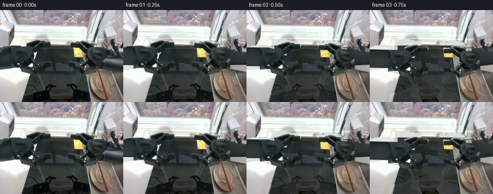
展开代码变化
--- 上一保存版本
+++ 本次保存版本
@@ -0,0 +1,215 @@
+from pathlib import Path
+import numpy as np
+from PIL import Image, ImageDraw, ImageFilter
+from scipy.ndimage import map_coordinates, gaussian_filter, distance_transform_edt
+import artifact_io
+
+ROOT = Path(__file__).resolve().parent
+W,H=256,192
+S=3
+original=np.asarray(Image.open(ROOT/'first_frame.png').convert('RGB'),dtype=np.uint8)
+rng=np.random.default_rng(74)
+
+def maskpoly(points):
+ im=Image.new('L',(W*S,H*S)); ImageDraw.Draw(im).polygon([(round(x*S),round(y*S)) for x,y in points],fill=255)
+ return np.asarray(im.resize((W,H),Image.Resampling.LANCZOS),dtype=float)/255
+
+# Each part is a rigid link, cut from the observed arm. The two opposed
+# fingers rotate independently about the actual hinge points.
+left_core=maskpoly([(0,79),(12,75),(26,74),(41,75),(50,77),(59,77),(65,81),(69,86),(69,95),(67,101),(61,108),(53,112),(45,118),(40,122),(29,121),(20,122),(0,125)])
+left_upper=maskpoly([(54,68),(76,61),(81,61),(85,64),(91,64),(94,66),(101,65),(104,66),(106,69),(106,77),(103,79),(92,79),(87,82),(83,87),(76,91),(71,90),(68,85),(66,82),(62,78),(55,76)])
+left_lower=maskpoly([(38,119),(44,115),(51,112),(58,107),(64,101),(69,102),(73,106),(75,110),(79,112),(87,111),(92,109),(97,109),(103,109),(105,111),(107,114),(107,121),(105,125),(99,125),(95,127),(91,134),(86,136),(76,135),(64,132),(52,130),(44,128),(42,125)])
+right_core=maskpoly([(182,79),(190,77),(204,79),(218,82),(228,84),(237,87),(245,88),(256,88),(256,129),(245,127),(230,124),(215,121),(208,119),(200,115),(191,109),(183,105),(178,98),(178,90)])
+right_upper=maskpoly([(146,69),(148,67),(159,68),(165,64),(174,64),(191,69),(197,72),(197,77),(193,81),(188,85),(186,91),(181,91),(175,88),(169,83),(163,80),(150,78),(146,77)])
+right_lower=maskpoly([(143,109),(148,108),(158,111),(166,112),(174,106),(178,102),(183,101),(188,105),(191,110),(198,114),(208,115),(214,120),(214,124),(204,128),(190,131),(182,134),(173,135),(170,133),(168,127),(162,123),(154,119),(146,118),(142,117)])
+# Retain the original wrist surface, but the long forearms are analytic
+# constant-length cylinders emerging from outside the camera's field of view.
+left_wrist=left_core*maskpoly([(20,60),(80,60),(80,140),(20,140)])
+right_wrist=right_core*maskpoly([(169,60),(221,60),(221,140),(169,140)])
+
+bowl_mask=maskpoly([(203,129),(212,130),(220,135),(226,143),(230,153),(233,164),(235,174),(232,182),(226,187),(216,188),(205,183),(197,174),(191,165),(187,154),(186,144),(189,136),(194,131)])
+sticks_mask=maskpoly([(199.7,121.6),(203.5,121.8),(226,186.8),(222,188)])
+
+# The chopsticks can be lifted independently from the bowl. Fill their narrow
+# original footprint by interpolating adjacent bowl-surface pixels.
+bowl_pixels=original.astype(float).copy()
+yy,xx=np.mgrid[:H,:W]
+line_x=201.9+(yy-123)*.34
+strip=(np.abs(xx-line_x)<3.0)&(yy>=124)&(yy<=187)&(bowl_mask>.1)
+for c in range(3):
+ a=map_coordinates(original[:,:,c].astype(float),[yy,xx-4],order=1,mode='nearest')
+ b=map_coordinates(original[:,:,c].astype(float),[yy,xx+4],order=1,mode='nearest')
+ bowl_pixels[:,:,c][strip]=(a[strip]+b[strip])*.5
+
+# Reconstruct only formerly occluded portions of the fixed worktop. Everything
+# outside those holes remains a copy of the supplied camera image.
+def background():
+ y,x=np.mgrid[:H,:W]
+ noise=gaussian_filter(rng.normal(0,1,(H,W)),.55)
+ surf=np.zeros((H,W,3),float)
+ # Back sill and countertop, lit by the window.
+ ledge=np.array([218.,225.,220.])[None,None,:]+(-.16*(y-65))[:,:,None]
+ surf[:]=ledge+noise[:,:,None]*1.5
+ below=y>=74
+ sink_left=57.+np.maximum(y-74,0)*.095
+ sink_left=np.where(y>121,65.-(y-121)*.255,sink_left)
+ sink_right=174.+np.maximum(y-105,0)*.175
+ interior=below&(x>=sink_left)&(x<sink_right)
+ val=55.+.1*(y-100)+4*np.sin((x-61)/26)+noise*1.0
+ # Recessed back wall and diagonal sink floor meet at y=123.
+ val-=np.clip(1-np.abs(y-121)/4,0,1)*8
+ val+=np.where(y>127,3.5+5*(y-127)/65,0)
+ for c,offset in enumerate([-2,1,0]): surf[:,:,c][interior]=val[interior]+offset
+ lc=below&(x<sink_left)
+ lv=226.-(y-100)*.15 - np.clip((x-sink_left+10)/10,0,1)*39+noise*1.15
+ for c,offset in enumerate([0,2,0]):surf[:,:,c][lc]=lv[lc]+offset
+ rc=below&(x>=sink_right)
+ rv=151.+.31*(x-200)-.25*(y-130)+noise*1.4
+ for c,offset in enumerate([4,0,-2]):surf[:,:,c][rc]=rv[rc]+offset
+ # A narrow polished lip around the right side of the sink.
+ rim=below&(np.abs(x-sink_right)<1.4)
+ surf[rim]=np.array([152,151,141])+noise[rim,None]*1.5
+ holes=np.maximum.reduce([left_core,left_upper,left_lower,right_core,right_upper,right_lower])
+ holes=np.maximum(holes,bowl_mask)
+ holes=np.maximum(holes,sticks_mask)
+ # Reflection footprints on the stainless-steel sink front.
+ refl=maskpoly([(46,174),(65,170),(75,168),(92,154),(98,154),(103,158),(115,157),(117,161),(110,164),(103,165),(100,174),(108,192),(41,192)])
+ refl=np.maximum(refl,maskpoly([(137,156),(149,153),(155,155),(161,160),(158,165),(165,169),(181,172),(189,192),(146,192),(140,181),(148,172),(149,165),(138,160)]))
+ holes=np.maximum(holes,refl)
+ # Cover the one-pixel dark silhouette edge before feathering the join.
+ holes=np.asarray(Image.fromarray((holes*255).astype('uint8')).filter(ImageFilter.MaxFilter(3)),float)/255
+ # Use smooth boundary-color corrections in large revealed areas, without
+ # extending any old silhouette or filling metal with black robot texture.
+ out=original.astype(float)*(1-holes[:,:,None])+surf*holes[:,:,None]
+ # The yellow label is static, and part of it was hidden by a finger.
+ label=Image.fromarray(np.clip(out,0,255).astype('uint8')).resize((W*S,H*S))
+ dr=ImageDraw.Draw(label)
+ dr.polygon([(153*S,78*S),(171*S,80*S),(172*S,99*S),(154*S,98*S)],fill=(228,207,86))
+ for j in range(3):
+ dr.line([(156*S,(84+j*4)*S),(168*S,(85+j*4)*S)],fill=(181,161,69),width=1)
+ lab=np.asarray(label.resize((W,H),Image.Resampling.LANCZOS),float)
+ # Only replace the missing label section; visible handwriting is original.
+ region=(x>=153)&(x<=172)&(y>=78)&(y<=99)
+ out[region]=lab[region]
+ known=(original[:,:,0]>165)&(original[:,:,1]>145)&(original[:,:,2]<150)®ion
+ out[known]=original[known]
+ return np.clip(out,0,255)
+
+back=background()
+Image.fromarray(back.astype('uint8')).save(ROOT/'.tmp/background.png')
+
+# Rigid 2-D camera projections. Their local pixel texture never bends or
+# changes shape: rotations and a uniform depth projection scale only.
+def warp_sprite(pixels,alpha,pivot,pos,scale,angle,local_pivot=None,local_angle=0):
+ ca,sa=np.cos(angle),np.sin(angle)
+ R=np.array([[ca,-sa],[sa,ca]])
+ ct,st=np.cos(local_angle),np.sin(local_angle)
+ Q=np.array([[ct,-st],[st,ct]])
+ lp=np.array(local_pivot if local_pivot is not None else pivot,float)
+ p=np.array(pivot,float); t=np.array(pos,float)
+ A=scale*R@Q
+ b=t+scale*R@(lp-Q@lp-p)
+ inv=np.linalg.inv(A)
+ coords=np.stack([xx-b[0],yy-b[1]],0).reshape(2,-1)
+ src=(inv@coords).reshape(2,H,W)
+ a=map_coordinates(alpha,[src[1],src[0]],order=1,mode='constant',cval=0)
+ rgb=np.zeros((H,W,3),float)
+ # Premultiply for clean silhouettes, including subpixel-thin jaw links.
+ for c in range(3):
+ z=map_coordinates(pixels[:,:,c]*alpha,[src[1],src[0]],order=1,mode='constant',cval=0)
+ rgb[:,:,c]=np.divide(z,a,out=np.zeros_like(z),where=a>1e-6)
+ return rgb,a
+
+def over(canvas,rgb,a):
+ return canvas*(1-a[:,:,None])+rgb*a[:,:,None]
+
+def smooth(u): return np.clip(u,0,1)**2*(3-2*np.clip(u,0,1))
+
+# A longitudinal metal tube of fixed physical length. Its remote joint is
+# outside the image throughout the action, as it is in frame zero.
+def shaft(canvas,pos,scale,angle,side):
+ unit=np.array([np.cos(angle),np.sin(angle)])*side
+ normal=np.array([-unit[1],unit[0]])
+ q=np.stack([xx-pos[0],yy-pos[1]],-1)
+ along=q@unit
+ across=q@normal
+ r=20.0*scale
+ start=8*scale; end=280*scale
+ aa=np.clip(r+.5-np.abs(across),0,1)*np.clip(along-start+.5,0,1)*np.clip(end-along+.5,0,1)
+ # Cylindrical diffuse highlight, with the darker underside consistent
+ # with the overhead window light in the observed first image.
+ z=np.clip(across/r,-1,1)
+ val=37+17*np.sqrt(np.maximum(0,1-z*z))-9*z
+ val+=1.6*np.sin(along*.18)+.7*np.sin(across*.7+along*.08)
+ rgb=np.stack([val-6,val+1,val],axis=-1)
+ return over(canvas,rgb,aa)
+
+def arm_sprites(pos,scale,angle,close,side):
+ if side<0:
+ pivot=(47,94)
+ pieces=[(left_wrist,None,0),(left_upper,(64,83),np.deg2rad(31)*close),(left_lower,(60,113),-np.deg2rad(31)*close)]
+ else:
+ pivot=(199,94)
+ pieces=[(right_wrist,None,0),(right_upper,(184,83),-np.deg2rad(32)*close),(right_lower,(183,113),np.deg2rad(32)*close)]
+ return [warp_sprite(original.astype(float),a,pivot,pos,scale,angle,lp,la) for a,lp,la in pieces]
+
+frames=[]
+for i in range(20):
+ if i==0:
+ frames.append(original.copy());continue
+ # Reach, make a brief stable contact, close both grippers, then lift.
+ t=i/19
+ reach=smooth((i-.3)/10.7)
+ close=smooth((i-10)/4.)
+ lift=smooth((i-14)/5.)
+ left_pos=np.array([47,94])+np.array([111,52])*reach+np.array([-13,-19])*lift
+ right_pos=np.array([199,94])+np.array([42,38])*reach+np.array([-6,-24])*lift
+ ls=1-.28*reach;rs=1-.29*reach
+ la=np.deg2rad(9)*reach
+ ra=np.deg2rad(-43)*reach
+ objshift=np.array([-13,-19])*lift
+ stickshift=np.array([-6,-24])*lift
+ canvas=back.copy()
+ # Object shadows stay tied to the counter and soften on lift.
+ bm=warp_sprite(bowl_pixels,bowl_mask,(210,158),np.array([210,158])+objshift,1,0)
+ # A soft neutral shadow on the drainboard under the bowl.
+ shadow=gaussian_filter(bm[1],2.0+2*lift)*.2*(1-.5*lift)
+ canvas=over(canvas,np.broadcast_to(np.array([38,37,33]),canvas.shape),shadow)
+ canvas=over(canvas,*bm)
+ sp=warp_sprite(original.astype(float),sticks_mask,(212,155),np.array([212,155])+stickshift,1,0)
+ canvas=over(canvas,*sp)
+ left=arm_sprites(left_pos,ls,la,close,-1)
+ right=arm_sprites(right_pos,rs,ra,close,1)
+ # Reflections move with the rigid wrists, fading smoothly in the basin.
+ reflection=np.zeros_like(canvas)
+ reflalpha=np.zeros((H,W))
+ for rgb,a in left+right:
+ ry=(282-yy).astype(float)
+ ar=map_coordinates(a,[ry,xx],order=1,mode='constant',cval=0)
+ reflalpha=np.maximum(reflalpha,ar)
+ for c in range(3):
+ reflection[:,:,c]+=map_coordinates(rgb[:,:,c]*a,[ry,xx],order=1,mode='constant',cval=0)
+ basin=(yy>137)&(xx>65-(yy-121)*.255)&(xx<174+(yy-105)*.175)
+ ar=gaussian_filter(reflalpha,1.1)*basin*.28
+ canvas=over(canvas,np.broadcast_to(np.array([13,22,21]),canvas.shape),ar)
+ # A broad shadow tracks the hands without dragging the fixed sink.
+ am=np.maximum.reduce([a for _,a in left+right])
+ ashadow=gaussian_filter(am,3)*.13*(yy>107)
+ canvas=over(canvas,np.broadcast_to(np.array([19,23,21]),canvas.shape),ashadow)
+ canvas=shaft(canvas,left_pos,ls,la,-1)
+ canvas=shaft(canvas,right_pos,rs,ra,1)
+ for rgb,a in left+right:
+ canvas=over(canvas,rgb,a)
+ # Smoothly reveal the unseen surfaces during the first projected motion,
+ # avoiding abrupt background popping as the two hands leave their pose.
+ if i<4:
+ # Original shadows dissipate, but the moving arm itself remains rigid.
+ oldmask=np.maximum.reduce([left_core,left_upper,left_lower,right_core,right_upper,right_lower])
+ unchanged=1-np.maximum(am,oldmask)
+ mix=(1-smooth(i/4))*unchanged
+ canvas=canvas*(1-mix[:,:,None])+original*mix[:,:,None]
+ frames.append(np.clip(canvas,0,255).astype('uint8'))
+
+frames=np.stack(frames)
+artifact_io.save(frames,ROOT)
+print('Saved',frames.shape,frames.dtype)
候选 02播放与检查图
点击播放 · 原生 RGB 像素

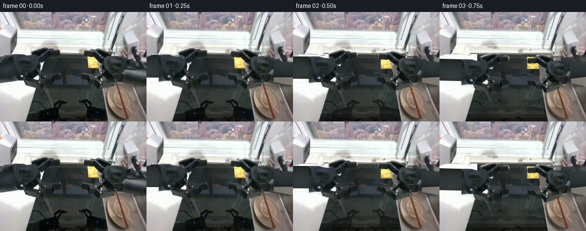
展开代码变化
--- 上一保存版本
+++ 本次保存版本
@@ -30,69 +30,79 @@
bowl_mask=maskpoly([(203,129),(212,130),(220,135),(226,143),(230,153),(233,164),(235,174),(232,182),(226,187),(216,188),(205,183),(197,174),(191,165),(187,154),(186,144),(189,136),(194,131)])
sticks_mask=maskpoly([(199.7,121.6),(203.5,121.8),(226,186.8),(222,188)])
-# The chopsticks can be lifted independently from the bowl. Fill their narrow
-# original footprint by interpolating adjacent bowl-surface pixels.
+# Remove the two chopstick silhouettes from the object texture by filling
+# a narrow crossing strip from the same material on either side.
bowl_pixels=original.astype(float).copy()
yy,xx=np.mgrid[:H,:W]
-line_x=201.9+(yy-123)*.34
-strip=(np.abs(xx-line_x)<3.0)&(yy>=124)&(yy<=187)&(bowl_mask>.1)
+line_x=201.5+(yy-123)*.335
+strip=(np.abs(xx-line_x)<3.0)&(yy>=124)&(yy<=189)&(bowl_mask>.05)
for c in range(3):
- a=map_coordinates(original[:,:,c].astype(float),[yy,xx-4],order=1,mode='nearest')
- b=map_coordinates(original[:,:,c].astype(float),[yy,xx+4],order=1,mode='nearest')
- bowl_pixels[:,:,c][strip]=(a[strip]+b[strip])*.5
+ l=map_coordinates(original[:,:,c].astype(float),[yy,line_x-4.2],order=1,mode='nearest')
+ r=map_coordinates(original[:,:,c].astype(float),[yy,line_x+4.2],order=1,mode='nearest')
+ f=np.clip((xx-(line_x-4.2))/8.4,0,1)
+ bowl_pixels[:,:,c][strip]=(l*(1-f)+r*f)[strip]
# Reconstruct only formerly occluded portions of the fixed worktop. Everything
# outside those holes remains a copy of the supplied camera image.
def background():
y,x=np.mgrid[:H,:W]
- noise=gaussian_filter(rng.normal(0,1,(H,W)),.55)
- surf=np.zeros((H,W,3),float)
- # Back sill and countertop, lit by the window.
- ledge=np.array([218.,225.,220.])[None,None,:]+(-.16*(y-65))[:,:,None]
- surf[:]=ledge+noise[:,:,None]*1.5
- below=y>=74
- sink_left=57.+np.maximum(y-74,0)*.095
- sink_left=np.where(y>121,65.-(y-121)*.255,sink_left)
- sink_right=174.+np.maximum(y-105,0)*.175
- interior=below&(x>=sink_left)&(x<sink_right)
- val=55.+.1*(y-100)+4*np.sin((x-61)/26)+noise*1.0
- # Recessed back wall and diagonal sink floor meet at y=123.
- val-=np.clip(1-np.abs(y-121)/4,0,1)*8
- val+=np.where(y>127,3.5+5*(y-127)/65,0)
- for c,offset in enumerate([-2,1,0]): surf[:,:,c][interior]=val[interior]+offset
- lc=below&(x<sink_left)
- lv=226.-(y-100)*.15 - np.clip((x-sink_left+10)/10,0,1)*39+noise*1.15
- for c,offset in enumerate([0,2,0]):surf[:,:,c][lc]=lv[lc]+offset
- rc=below&(x>=sink_right)
- rv=151.+.31*(x-200)-.25*(y-130)+noise*1.4
- for c,offset in enumerate([4,0,-2]):surf[:,:,c][rc]=rv[rc]+offset
- # A narrow polished lip around the right side of the sink.
- rim=below&(np.abs(x-sink_right)<1.4)
- surf[rim]=np.array([152,151,141])+noise[rim,None]*1.5
- holes=np.maximum.reduce([left_core,left_upper,left_lower,right_core,right_upper,right_lower])
- holes=np.maximum(holes,bowl_mask)
- holes=np.maximum(holes,sticks_mask)
- # Reflection footprints on the stainless-steel sink front.
- refl=maskpoly([(46,174),(65,170),(75,168),(92,154),(98,154),(103,158),(115,157),(117,161),(110,164),(103,165),(100,174),(108,192),(41,192)])
+ noise=gaussian_filter(rng.normal(0,1,(H,W)),.65)
+ holes=np.maximum.reduce([left_core,left_upper,left_lower,right_core,right_upper,right_lower,bowl_mask,sticks_mask])
+ # The dark shapes at the very bottom are wrist reflections; the black
+ # faucet cable and straight sink edges are fixed and must remain.
+ refl=maskpoly([(53,175),(65,170),(75,169),(93,154),(98,154),(103,158),(115,157),(117,161),(108,164),(102,171),(108,192),(52,192)])
refl=np.maximum(refl,maskpoly([(137,156),(149,153),(155,155),(161,160),(158,165),(165,169),(181,172),(189,192),(146,192),(140,181),(148,172),(149,165),(138,160)]))
holes=np.maximum(holes,refl)
- # Cover the one-pixel dark silhouette edge before feathering the join.
holes=np.asarray(Image.fromarray((holes*255).astype('uint8')).filter(ImageFilter.MaxFilter(3)),float)/255
- # Use smooth boundary-color corrections in large revealed areas, without
- # extending any old silhouette or filling metal with black robot texture.
+ # Real visible surface samples are extended along the approximately
+ # horizontal worktop planes. This keeps their original exposure and grain.
+ surf=np.zeros((H,W,3),float)
+ for row in range(H):
+ if row<71:
+ sample=original[row,108:144].astype(float)
+ col=np.median(sample,axis=0)
+ surf[row,:,:]=col
+ elif row<75:
+ col=np.median(original[row,108:144],axis=0)
+ surf[row,:,:]=col
+ else:
+ col=np.median(original[row,max(105,109-int((row-110)*.05)):140],axis=0)
+ surf[row,:,:]=col
+ surf+=noise[:,:,None]*1.3
+ # The left sink edge projects down-left from the rear corner.
+ # Its occluded top segment is at x=66, NOT at the wrist boundary x=40.
+ edge=66.-np.maximum(y-112,0)*.276
+ leftcounter=(x<edge)&(y>=74)
+ # Real countertop colors fade from white in the sunlight to silver gray.
+ for row in range(74,H):
+ sample=original[row,3:34].astype(float)
+ if row<125: sample=original[131,3:34].astype(float)
+ col=np.median(sample,axis=0)
+ ids=leftcounter[row]
+ surf[row,ids]=col+noise[row,ids,None]*1.15
+ # Extend the sink's faint rear border without creating large flat polygons.
+ rim=(y>=74)&(np.abs(x-edge)<1.0)
+ surf[rim]*=.76
+ rightedge=175.+np.maximum(y-111,0)*.19
+ rightcounter=(x>=rightedge)&(y>=74)
+ # A smooth, lit draining board. The original diagonal raised ridge is
+ # kept outside the removed object footprint.
+ v=113.-.13*(y-140)+.20*(x-220)+noise*1.6
+ for c,o in enumerate([6,0,-5]): surf[:,:,c][rightcounter]=v[rightcounter]+o
+ lip=(np.abs(x-rightedge)<1)&(y>111)
+ surf[lip]=np.array([140,139,134])+noise[lip,None]
+ # Feather only the outside seam of each occlusion, not the moving sprite.
out=original.astype(float)*(1-holes[:,:,None])+surf*holes[:,:,None]
- # The yellow label is static, and part of it was hidden by a finger.
- label=Image.fromarray(np.clip(out,0,255).astype('uint8')).resize((W*S,H*S))
- dr=ImageDraw.Draw(label)
- dr.polygon([(153*S,78*S),(171*S,80*S),(172*S,99*S),(154*S,98*S)],fill=(228,207,86))
- for j in range(3):
- dr.line([(156*S,(84+j*4)*S),(168*S,(85+j*4)*S)],fill=(181,161,69),width=1)
- lab=np.asarray(label.resize((W,H),Image.Resampling.LANCZOS),float)
- # Only replace the missing label section; visible handwriting is original.
- region=(x>=153)&(x<=172)&(y>=78)&(y<=99)
- out[region]=lab[region]
- known=(original[:,:,0]>165)&(original[:,:,1]>145)&(original[:,:,2]<150)®ion
+ # A soft band hides unreliable source shadows without painting geometry.
+ cleanup=maskpoly([(166,100),(177,99),(183,108),(182,126),(175,132),(168,121)])
+ out=out*(1-cleanup[:,:,None])+surf*cleanup[:,:,None]
+ # Restore all visible parts of the static paper label.
+ known=(original[:,:,0]>165)&(original[:,:,1]>145)&(original[:,:,2]<150)&(x>=151)&(x<=175)&(y>=77)&(y<=99)
out[known]=original[known]
+ missing=(x>=153)&(x<=172)&(y>=79)&(y<=99)&~known
+ nearest=distance_transform_edt(~known,return_distances=False,return_indices=True)
+ tex=original[nearest[0],nearest[1]]
+ out[missing]=tex[missing]
return np.clip(out,0,255)
back=background()
候选 03播放与检查图
点击播放 · 原生 RGB 像素
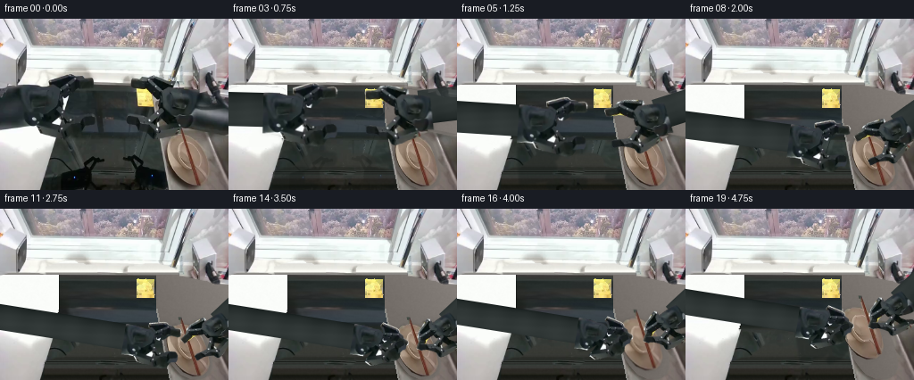
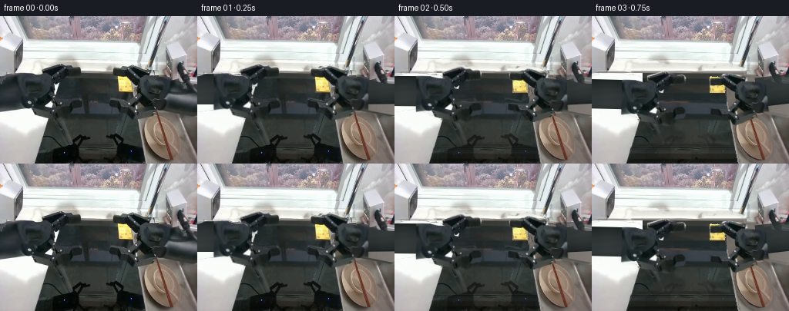
展开代码变化
--- 上一保存版本
+++ 本次保存版本
@@ -53,7 +53,11 @@
refl=maskpoly([(53,175),(65,170),(75,169),(93,154),(98,154),(103,158),(115,157),(117,161),(108,164),(102,171),(108,192),(52,192)])
refl=np.maximum(refl,maskpoly([(137,156),(149,153),(155,155),(161,160),(158,165),(165,169),(181,172),(189,192),(146,192),(140,181),(148,172),(149,165),(138,160)]))
holes=np.maximum(holes,refl)
- holes=np.asarray(Image.fromarray((holes*255).astype('uint8')).filter(ImageFilter.MaxFilter(3)),float)/255
+ holes=np.asarray(Image.fromarray((holes*255).astype('uint8')).filter(ImageFilter.MaxFilter(7)),float)/255
+ # Expand and softly feather unrevealed surfaces to eliminate old edges.
+ holes=np.maximum(holes, gaussian_filter(holes,1.4))
+ central=(y>=74)&(y<=135)&(x>=66)&(x<=175)
+ holes[central]=1
# Real visible surface samples are extended along the approximately
# horizontal worktop planes. This keeps their original exposure and grain.
surf=np.zeros((H,W,3),float)
@@ -66,9 +70,16 @@
col=np.median(original[row,108:144],axis=0)
surf[row,:,:]=col
else:
- col=np.median(original[row,max(105,109-int((row-110)*.05)):140],axis=0)
+ col=np.median(original[row,112:140],axis=0)
surf[row,:,:]=col
surf+=noise[:,:,None]*1.3
+ # The original center-wall texture is the basis for the revealed basin.
+ # Stretch only the background, never a rigid moving link.
+ for row in range(74,136):
+ sx=112+np.clip((np.arange(W)-66)/(175-66),0,1)*27
+ for c in range(3):
+ sample=np.interp(sx,np.arange(112,140),original[row,112:140,c])
+ surf[row,:,c]=gaussian_filter(sample,1.2)+noise[row]*.85
# The left sink edge projects down-left from the rear corner.
# Its occluded top segment is at x=66, NOT at the wrist boundary x=40.
edge=66.-np.maximum(y-112,0)*.276
候选 04播放与检查图
点击播放 · 原生 RGB 像素
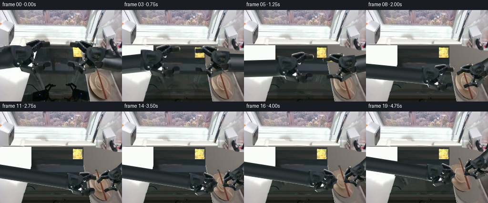
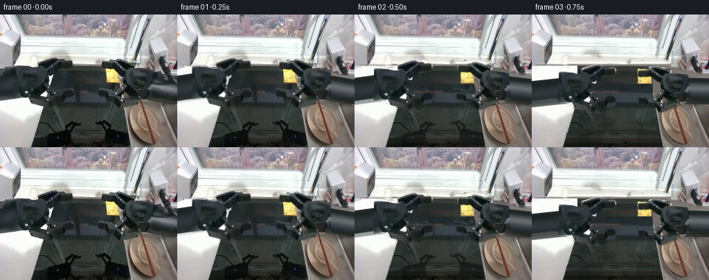
展开代码变化
--- 上一保存版本
+++ 本次保存版本
@@ -157,12 +157,19 @@
r=20.0*scale
start=8*scale; end=280*scale
aa=np.clip(r+.5-np.abs(across),0,1)*np.clip(along-start+.5,0,1)*np.clip(end-along+.5,0,1)
- # Cylindrical diffuse highlight, with the darker underside consistent
- # with the overhead window light in the observed first image.
+ # Cylindrical diffuse highlight plus the original forearm's measured
+ # top-to-bottom material texture (not a stretched wrist or finger).
z=np.clip(across/r,-1,1)
val=37+17*np.sqrt(np.maximum(0,1-z*z))-9*z
- val+=1.6*np.sin(along*.18)+.7*np.sin(across*.7+along*.08)
- rgb=np.stack([val-6,val+1,val],axis=-1)
+ if side<0:
+ sy=101-z*22
+ sx=12+2*np.sin(along*.025)
+ else:
+ sy=111+z*17
+ sx=247+2*np.sin(along*.025)
+ sampled=np.stack([map_coordinates(original[:,:,c].astype(float),[sy,sx],order=1,mode='nearest') for c in range(3)],-1)
+ analytic=np.stack([val-6,val+1,val],axis=-1)
+ rgb=sampled*.7+analytic*.3
return over(canvas,rgb,aa)
def arm_sprites(pos,scale,angle,close,side):
@@ -217,8 +224,8 @@
am=np.maximum.reduce([a for _,a in left+right])
ashadow=gaussian_filter(am,3)*.13*(yy>107)
canvas=over(canvas,np.broadcast_to(np.array([19,23,21]),canvas.shape),ashadow)
- canvas=shaft(canvas,left_pos,ls,la,-1)
- canvas=shaft(canvas,right_pos,rs,ra,1)
+ canvas=shaft(canvas,left_pos+np.array([0,6])*ls,ls,la-np.deg2rad(9)*(1-reach),-1)
+ canvas=shaft(canvas,right_pos+np.array([0,10])*rs,rs,ra+np.deg2rad(10)*(1-reach),1)
for rgb,a in left+right:
canvas=over(canvas,rgb,a)
# Smoothly reveal the unseen surfaces during the first projected motion,
可观测工具轨迹
实际执行的命令与返回图片。
命令 1exit 0
/bin/bash -lc 'ls -la && cat prompt.txt && cat GENERATION_RULES.md'
命令 2exit 0
/bin/bash -lc "cat task_spec.json && cat artifact_io.py && python - <<'PY'
from PIL import Image
im=Image.open('first_frame.png'); print(im.size); im.resize((1024,768)).save('.tmp/first_frame_large.png')
PY"命令 3exit 0
/bin/bash -lc "python - <<'PY'
from PIL import Image,ImageDraw
im=Image.open('first_frame.png').resize((1024,768));d=ImageDraw.Draw(im)
for x in range(0,256,16):
d.line((x*4,0,x*4,768), fill=(200,50,50),width=1);d.text((x*4,0),str(x),fill=(255,0,0))
for y in range(0,192,16):
d.line((0,y*4,1024,y*4), fill=(200,50,50),width=1);d.text((0,y*4),str(y),fill=(255,0,0))
im.save('.tmp/grid.png')
PY"命令 4exit 0
/bin/bash -lc "python - <<'PY' import importlib.util for x in ['numpy','PIL','scipy','cv2']: print(x,bool(importlib.util.find_spec(x))) PY"
命令 5exit 0
/bin/bash -lc "python - <<'PY'
from PIL import Image
im=Image.open('first_frame.png')
im.crop((35,58,112,139)).resize((616,648)).save('.tmp/left.png')
im.crop((136,57,224,139)).resize((704,656)).save('.tmp/right.png')
PY"命令 6exit 0
/bin/bash -lc "cat > generate.py <<'PY'
from pathlib import Path
import numpy as np
from PIL import Image, ImageDraw, ImageFilter
from scipy.ndimage import map_coordinates, gaussian_filter, distance_transform_edt
import artifact_io
ROOT = Path(__file__).resolve().parent
W,H=256,192
S=3
original=np.asarray(Image.open(ROOT/'first_frame.png').convert('RGB'),dtype=np.uint8)
rng=np.random.default_rng(74)
def maskpoly(points):
im=Image.new('L',(W*S,H*S)); ImageDraw.Draw(im).polygon([(round(x*S),round(y*S)) for x,y in points],fill=255)
return np.asarray(im.resize((W,H),Image.Resampling.LANCZOS),dtype=float)/255
# Each part is a rigid link, cut from the observed arm. The two opposed
# fingers rotate independently about the actual hinge points.
left_core=maskpoly([(0,79),(12,75),(26,74),(41,75),(50,77),(59,77),(65,81),(69,86),(69,95),(67,101),(61,108),(53,112),(45,118),(40,122),(29,121),(20,122),(0,125)])
left_upper=maskpoly([(54,68),(76,61),(81,61),(85,64),(91,64),(94,66),(101,65),(104,66),(106,69),(106,77),(103,79),(92,79),(87,82),(83,87),(76,91),(71,90),(68,85),(66,82),(62,78),(55,76)])
left_lower=maskpoly([(38,119),(44,115),(51,112),(58,107),(64,101),(69,102),(73,106),(75,110),(79,112),(87,111),(92,109),(97,109),(103,109),(105,111),(107,114),(107,121),(105,125),(99,125),(95,127),(91,134),(86,136),(76,135),(64,132),(52,130),(44,128),(42,125)])
right_core=maskpoly([(182,79),(190,77),(204,79),(218,82),(228,84),(237,87),(245,88),(256,88),(256,129),(245,127),(230,124),(215,121),(208,119),(200,115),(191,109),(183,105),(178,98),(178,90)])
right_upper=maskpoly([(146,69),(148,67),(159,68),(165,64),(174,64),(191,69),(197,72),(197,77),(193,81),(188,85),(186,91),(181,91),(175,88),(169,83),(163,80),(150,78),(146,77)])
right_lower=maskpoly([(143,109),(148,108),(158,111),(166,112),(174,106),(178,102),(183,101),(188,105),(191,110),(198,114),(208,115),(214,120),(214,124),(204,128),(190,131),(182,134),(173,135),(170,133),(168,127),(162,123),(154,119),(146,118),(142,117)])
# Retain the original wrist surface, but the long forearms are analytic
# constant-length cylinders emerging from outside the camera's field of view.
left_wrist=left_core*maskpoly([(20,60),(80,60),(80,140),(20,140)])
right_wrist=right_core*maskpoly([(169,60),(221,60),(221,140),(169,140)])
bowl_mask=maskpoly([(203,129),(212,130),(220,135),(226,143),(230,153),(233,164),(235,174),(232,182),(226,187),(216,188),(205,183),(197,174),(191,165),(187,154),(186,144),(189,136),(194,131)])
sticks_mask=maskpoly([(199.7,121.6),(203.5,121.8),(226,186.8),(222,188)])
# The chopsticks can be lifted independently from the bowl. Fill their narrow
# original footprint by interpolating adjacent bowl-surface pixels.
bowl_pixels=original.astype(float).copy()
yy,xx=np.mgrid[:H,:W]
line_x=201.9+(yy-123)*.34
strip=(np.abs(xx-line_x)<3.0)&(yy>=124)&(yy<=187)&(bowl_mask>.1)
for c in range(3):
a=map_coordinates(original[:,:,c].astype(float),[yy,xx-4],order=1,mode='nearest')
b=map_coordinates(original[:,:,c].astype(float),[yy,xx+4],order=1,mode='nearest')
bowl_pixels[:,:,c][strip]=(a[strip]+b[strip])*.5
# Reconstruct only formerly occluded portions of the fixed worktop. Everything
# outside those holes remains a copy of the supplied camera image.
def background():
y,x=np.mgrid[:H,:W]
noise=gaussian_filter(rng.normal(0,1,(H,W)),.55)
surf=np.zeros((H,W,3),float)
# Back sill and countertop, lit by the window.
ledge=np.array([218.,225.,220.])[None,None,:]+(-.16*(y-65))[:,:,None]
surf[:]=ledge+noise[:,:,None]*1.5
below=y>=74
sink_left=57.+np.maximum(y-74,0)*.095
sink_left=np.where(y>121,65.-(y-121)*.255,sink_left)
sink_right=174.+np.maximum(y-105,0)*.175
interior=below&(x>=sink_left)&(x<sink_right)
val=55.+.1*(y-100)+4*np.sin((x-61)/26)+noise*1.0
# Recessed back wall and diagonal sink floor meet at y=123.
val-=np.clip(1-np.abs(y-121)/4,0,1)*8
val+=np.where(y>127,3.5+5*(y-127)/65,0)
for c,offset in enumerate([-2,1,0]): surf[:,:,c][interior]=val[interior]+offset
lc=below&(x<sink_left)
lv=226.-(y-100)*.15 - np.clip((x-sink_left+10)/10,0,1)*39+noise*1.15
for c,offset in enumerate([0,2,0]):surf[:,:,c][lc]=lv[lc]+offset
rc=below&(x>=sink_right)
rv=151.+.31*(x-200)-.25*(y-130)+noise*1.4
for c,offset in enumerate([4,0,-2]):surf[:,:,c][rc]=rv[rc]+offset
# A narrow polished lip around the right side of the sink.
rim=below&(np.abs(x-sink_right)<1.4)
surf[rim]=np.array([152,151,141])+noise[rim,None]*1.5
holes=np.maximum.reduce([left_core,left_upper,left_lower,right_core,right_upper,right_lower])
holes=np.maximum(holes,bowl_mask)
holes=np.maximum(holes,sticks_mask)
# Reflection footprints on the stainless-steel sink front.
refl=maskpoly([(46,174),(65,170),(75,168),(92,154),(98,154),(103,158),(115,157),(117,161),(110,164),(103,165),(100,174),(108,192),(41,192)])
refl=np.maximum(refl,maskpoly([(137,156),(149,153),(155,155),(161,160),(158,165),(165,169),(181,172),(189,192),(146,192),(140,181),(148,172),(149,165),(138,160)]))
holes=np.maximum(holes,refl)
# Cover the one-pixel dark silhouette edge before feathering the join.
holes=np.asarray(Image.fromarray((holes*255).astype('uint8')).filter(ImageFilter.MaxFilter(3)),float)/255
# Use smooth boundary-color corrections in large revealed areas, without
# extending any old silhouette or filling metal with black robot texture.
out=original.astype(float)*(1-holes[:,:,None])+surf*holes[:,:,None]
# The yellow label is static, and part of it was hidden by a finger.
label=Image.fromarray(np.clip(out,0,255).astype('uint8')).resize((W*S,H*S))
dr=ImageDraw.Draw(label)
dr.polygon([(153*S,78*S),(171*S,80*S),(172*S,99*S),(154*S,98*S)],fill=(228,207,86))
for j in range(3):
dr.line([(156*S,(84+j*4)*S),(168*S,(85+j*4)*S)],fill=(181,161,69),width=1)
lab=np.asarray(label.resize((W,H),Image.Resampling.LANCZOS),float)
# Only replace the missing label section; visible handwriting is original.
region=(x>=153)&(x<=172)&(y>=78)&(y<=99)
out[region]=lab[region]
known=(original[:,:,0]>165)&(original[:,:,1]>145)&(original[:,:,2]<150)®ion
out[known]=original[known]
return np.clip(out,0,255)
back=background()
Image.fromarray(back.astype('uint8')).save(ROOT/'.tmp/background.png')
# Rigid 2-D camera projections. Their local pixel texture never bends or
# changes shape: rotations and a uniform depth projection scale only.
def warp_sprite(pixels,alpha,pivot,pos,scale,angle,local_pivot=None,local_angle=0):
ca,sa=np.cos(angle),np.sin(angle)
R=np.array([[ca,-sa],[sa,ca]])
ct,st=np.cos(local_angle),np.sin(local_angle)
Q=np.array([[ct,-st],[st,ct]])
lp=np.array(local_pivot if local_pivot is not None else pivot,float)
p=np.array(pivot,float); t=np.array(pos,float)
A=scale*R@Q
b=t+scale*R@(lp-Q@lp-p)
inv=np.linalg.inv(A)
coords=np.stack([xx-b[0],yy-b[1]],0).reshape(2,-1)
src=(inv@coords).reshape(2,H,W)
a=map_coordinates(alpha,[src[1],src[0]],order=1,mode='constant',cval=0)
rgb=np.zeros((H,W,3),float)
# Premultiply for clean silhouettes, including subpixel-thin jaw links.
for c in range(3):
z=map_coordinates(pixels[:,:,c]*alpha,[src[1],src[0]],order=1,mode='constant',cval=0)
rgb[:,:,c]=np.divide(z,a,out=np.zeros_like(z),where=a>1e-6)
return rgb,a
def over(canvas,rgb,a):
return canvas*(1-a[:,:,None])+rgb*a[:,:,None]
def smooth(u): return np.clip(u,0,1)**2*(3-2*np.clip(u,0,1))
# A longitudinal metal tube of fixed physical length. Its remote joint is
# outside the image throughout the action, as it is in frame zero.
def shaft(canvas,pos,scale,angle,side):
unit=np.array([np.cos(angle),np.sin(angle)])*side
normal=np.array([-unit[1],unit[0]])
q=np.stack([xx-pos[0],yy-pos[1]],-1)
along=q@unit
across=q@normal
r=20.0*scale
start=8*scale; end=280*scale
aa=np.clip(r+.5-np.abs(across),0,1)*np.clip(along-start+.5,0,1)*np.clip(end-along+.5,0,1)
# Cylindrical diffuse highlight, with the darker underside consistent
# with the overhead window light in the observed first image.
z=np.clip(across/r,-1,1)
val=37+17*np.sqrt(np.maximum(0,1-z*z))-9*z
val+=1.6*np.sin(along*.18)+.7*np.sin(across*.7+along*.08)
rgb=np.stack([val-6,val+1,val],axis=-1)
return over(canvas,rgb,aa)
def arm_sprites(pos,scale,angle,close,side):
if side<0:
pivot=(47,94)
pieces=[(left_wrist,None,0),(left_upper,(64,83),np.deg2rad(31)*close),(left_lower,(60,113),-np.deg2rad(31)*close)]
else:
pivot=(199,94)
pieces=[(right_wrist,None,0),(right_upper,(184,83),-np.deg2rad(32)*close),(right_lower,(183,113),np.deg2rad(32)*close)]
return [warp_sprite(original.astype(float),a,pivot,pos,scale,angle,lp,la) for a,lp,la in pieces]
frames=[]
for i in range(20):
if i==0:
frames.append(original.copy());continue
# Reach, make a brief stable contact, close both grippers, then lift.
t=i/19
reach=smooth((i-.3)/10.7)
close=smooth((i-10)/4.)
lift=smooth((i-14)/5.)
left_pos=np.array([47,94])+np.array([111,52])*reach+np.array([-13,-19])*lift
right_pos=np.array([199,94])+np.array([42,38])*reach+np.array([-6,-24])*lift
ls=1-.28*reach;rs=1-.29*reach
la=np.deg2rad(9)*reach
ra=np.deg2rad(-43)*reach
objshift=np.array([-13,-19])*lift
stickshift=np.array([-6,-24])*lift
canvas=back.copy()
# Object shadows stay tied to the counter and soften on lift.
bm=warp_sprite(bowl_pixels,bowl_mask,(210,158),np.array([210,158])+objshift,1,0)
# A soft neutral shadow on the drainboard under the bowl.
shadow=gaussian_filter(bm[1],2.0+2*lift)*.2*(1-.5*lift)
canvas=over(canvas,np.broadcast_to(np.array([38,37,33]),canvas.shape),shadow)
canvas=over(canvas,*bm)
sp=warp_sprite(original.astype(float),sticks_mask,(212,155),np.array([212,155])+stickshift,1,0)
canvas=over(canvas,*sp)
left=arm_sprites(left_pos,ls,la,close,-1)
right=arm_sprites(right_pos,rs,ra,close,1)
# Reflections move with the rigid wrists, fading smoothly in the basin.
reflection=np.zeros_like(canvas)
reflalpha=np.zeros((H,W))
for rgb,a in left+right:
ry=(282-yy).astype(float)
ar=map_coordinates(a,[ry,xx],order=1,mode='constant',cval=0)
reflalpha=np.maximum(reflalpha,ar)
for c in range(3):
reflection[:,:,c]+=map_coordinates(rgb[:,:,c]*a,[ry,xx],order=1,mode='constant',cval=0)
basin=(yy>137)&(xx>65-(yy-121)*.255)&(xx<174+(yy-105)*.175)
ar=gaussian_filter(reflalpha,1.1)*basin*.28
canvas=over(canvas,np.broadcast_to(np.array([13,22,21]),canvas.shape),ar)
# A broad shadow tracks the hands without dragging the fixed sink.
am=np.maximum.reduce([a for _,a in left+right])
ashadow=gaussian_filter(am,3)*.13*(yy>107)
canvas=over(canvas,np.broadcast_to(np.array([19,23,21]),canvas.shape),ashadow)
canvas=shaft(canvas,left_pos,ls,la,-1)
canvas=shaft(canvas,right_pos,rs,ra,1)
for rgb,a in left+right:
canvas=over(canvas,rgb,a)
# Smoothly reveal the unseen surfaces during the first projected motion,
# avoiding abrupt background popping as the two hands leave their pose.
if i<4:
# Original shadows dissipate, but the moving arm itself remains rigid.
oldmask=np.maximum.reduce([left_core,left_upper,left_lower,right_core,right_upper,right_lower])
unchanged=1-np.maximum(am,oldmask)
mix=(1-smooth(i/4))*unchanged
canvas=canvas*(1-mix[:,:,None])+original*mix[:,:,None]
frames.append(np.clip(canvas,0,255).astype('uint8'))
frames=np.stack(frames)
artifact_io.save(frames,ROOT)
print('Saved',frames.shape,frames.dtype)
PY
python generate.py"命令 7exit 0
/bin/bash -lc "python - <<'PY'
from PIL import Image
import numpy as np
im=np.array(Image.open('first_frame.png'))
for y in [62,68,72,76,85,95,105,115,125,135,145,160,180]:
print(y,[(x,im[y,x].tolist()) for x in [0,20,45,55,80,110,120,130,150,175,185,220,240,255]])
PY"命令 8exit 0
/bin/bash -lc "python - <<'PY'
from PIL import Image
for i in [1,11,14,19]: Image.open('frames/%02d.png'%i).resize((1024,768)).save('.tmp/f%d.png'%i)
PY"命令 9exit 0
/bin/bash -lc "python - <<'PY'
from PIL import Image
im=Image.open('first_frame.png');im.crop((184,123,239,192)).resize((550,690)).save('.tmp/bowl.png')
PY"命令 10exit 0
/bin/bash -lc "python - <<'PY'
import ast
p='generate.py'
s=open(p).read()
a=s.index('# The chopsticks can be lifted independently')
b=s.index('# Reconstruct only formerly',a)
s=s[:a]+'''# Remove the two chopstick silhouettes from the object texture by filling
# a narrow crossing strip from the same material on either side.
bowl_pixels=original.astype(float).copy()
yy,xx=np.mgrid[:H,:W]
line_x=201.5+(yy-123)*.335
strip=(np.abs(xx-line_x)<3.0)&(yy>=124)&(yy<=189)&(bowl_mask>.05)
for c in range(3):
l=map_coordinates(original[:,:,c].astype(float),[yy,line_x-4.2],order=1,mode='nearest')
r=map_coordinates(original[:,:,c].astype(float),[yy,line_x+4.2],order=1,mode='nearest')
f=np.clip((xx-(line_x-4.2))/8.4,0,1)
bowl_pixels[:,:,c][strip]=(l*(1-f)+r*f)[strip]
'''+s[b:]
s=s.replace('stickshift=np.array([-6,-24])*lift','stickshift=np.array([-6,-24])*lift')
a=s.index('def background():')
b=s.index('\\nback=background()',a)
s=s[:a]+'''def background():
y,x=np.mgrid[:H,:W]
noise=gaussian_filter(rng.normal(0,1,(H,W)),.65)
holes=np.maximum.reduce([left_core,left_upper,left_lower,right_core,right_upper,right_lower,bowl_mask,sticks_mask])
# The dark shapes at the very bottom are wrist reflections; the black
# faucet cable and straight sink edges are fixed and must remain.
refl=maskpoly([(53,175),(65,170),(75,169),(93,154),(98,154),(103,158),(115,157),(117,161),(108,164),(102,171),(108,192),(52,192)])
refl=np.maximum(refl,maskpoly([(137,156),(149,153),(155,155),(161,160),(158,165),(165,169),(181,172),(189,192),(146,192),(140,181),(148,172),(149,165),(138,160)]))
holes=np.maximum(holes,refl)
holes=np.asarray(Image.fromarray((holes*255).astype('uint8')).filter(ImageFilter.MaxFilter(3)),float)/255
# Real visible surface samples are extended along the approximately
# horizontal worktop planes. This keeps their original exposure and grain.
surf=np.zeros((H,W,3),float)
for row in range(H):
if row<71:
sample=original[row,108:144].astype(float)
col=np.median(sample,axis=0)
surf[row,:,:]=col
elif row<75:
col=np.median(original[row,108:144],axis=0)
surf[row,:,:]=col
else:
col=np.median(original[row,max(105,109-int((row-110)*.05)):140],axis=0)
surf[row,:,:]=col
surf+=noise[:,:,None]*1.3
# The left sink edge projects down-left from the rear corner.
# Its occluded top segment is at x=66, NOT at the wrist boundary x=40.
edge=66.-np.maximum(y-112,0)*.276
leftcounter=(x<edge)&(y>=74)
# Real countertop colors fade from white in the sunlight to silver gray.
for row in range(74,H):
sample=original[row,3:34].astype(float)
if row<125: sample=original[131,3:34].astype(float)
col=np.median(sample,axis=0)
ids=leftcounter[row]
surf[row,ids]=col+noise[row,ids,None]*1.15
# Extend the sink's faint rear border without creating large flat polygons.
rim=(y>=74)&(np.abs(x-edge)<1.0)
surf[rim]*=.76
rightedge=175.+np.maximum(y-111,0)*.19
rightcounter=(x>=rightedge)&(y>=74)
# A smooth, lit draining board. The original diagonal raised ridge is
# kept outside the removed object footprint.
v=113.-.13*(y-140)+.20*(x-220)+noise*1.6
for c,o in enumerate([6,0,-5]): surf[:,:,c][rightcounter]=v[rightcounter]+o
lip=(np.abs(x-rightedge)<1)&(y>111)
surf[lip]=np.array([140,139,134])+noise[lip,None]
# Feather only the outside seam of each occlusion, not the moving sprite.
out=original.astype(float)*(1-holes[:,:,None])+surf*holes[:,:,None]
# A soft band hides unreliable source shadows without painting geometry.
cleanup=maskpoly([(166,100),(177,99),(183,108),(182,126),(175,132),(168,121)])
out=out*(1-cleanup[:,:,None])+surf*cleanup[:,:,None]
# Restore all visible parts of the static paper label.
known=(original[:,:,0]>165)&(original[:,:,1]>145)&(original[:,:,2]<150)&(x>=151)&(x<=175)&(y>=77)&(y<=99)
out[known]=original[known]
missing=(x>=153)&(x<=172)&(y>=79)&(y<=99)&~known
nearest=distance_transform_edt(~known,return_distances=False,return_indices=True)
tex=original[nearest[0],nearest[1]]
out[missing]=tex[missing]
return np.clip(out,0,255)
'''+s[b:]
open(p,'w').write(s)
PY
python generate.py"命令 11exit 0
/bin/bash -lc "python - <<'PY'
p='generate.py';s=open(p).read();s=s.replace(\".filter(ImageFilter.MaxFilter(3)),float)/255\\n # Real visible\", \".filter(ImageFilter.MaxFilter(7)),float)/255\\n # Expand and softly feather unrevealed surfaces to eliminate old edges.\\n holes=np.maximum(holes, gaussian_filter(holes,1.4))\\n central=(y>=74)&(y<=135)&(x>=66)&(x<=175)\\n holes[central]=1\\n # Real visible\")
s=s.replace('col=np.median(original[row,max(105,109-int((row-110)*.05)):140],axis=0)\\n surf[row,:,:]=col', 'col=np.median(original[row,112:140],axis=0)\\n surf[row,:,:]=col')
# Add continuous same-surface grain and original center details
s=s.replace('surf+=noise[:,:,None]*1.3', '''surf+=noise[:,:,None]*1.3
# The original center-wall texture is the basis for the revealed basin.
# Stretch only the background, never a rigid moving link.
for row in range(74,136):
sx=112+np.clip((np.arange(W)-66)/(175-66),0,1)*27
for c in range(3):
sample=np.interp(sx,np.arange(112,140),original[row,112:140,c])
surf[row,:,c]=gaussian_filter(sample,1.2)+noise[row]*.85''')
# anti alias better around original frame 1
open(p,'w').write(s)
PY
python generate.py"命令 12exit 1
/bin/bash -lc "python - <<'PY'
from PIL import Image
import numpy as np
im=Image.open('frames/01.png');im.resize((1024,768)).save('.tmp/frame01.png')
x=np.load('pixels.npz')['pixels'];print('Pixels:',x.shape,x.dtype)
a=np.array(Image.open('first_frame.png').convert('RGB'));b=np.array(Image.open('frames/00.png'));print('Frame 00 identical:',np.array_equal(a,b))
PY
command -v ffmpeg"命令 13exit 0
/bin/bash -lc "python - <<'PY'
p='generate.py';s=open(p).read()
a=s.index(' # Cylindrical diffuse highlight')
b=s.index(' return over(canvas,rgb,aa)',a)
s=s[:a]+''' # Cylindrical diffuse highlight plus the original forearm's measured
# top-to-bottom material texture (not a stretched wrist or finger).
z=np.clip(across/r,-1,1)
val=37+17*np.sqrt(np.maximum(0,1-z*z))-9*z
if side<0:
sy=101-z*22
sx=12+2*np.sin(along*.025)
else:
sy=111+z*17
sx=247+2*np.sin(along*.025)
sampled=np.stack([map_coordinates(original[:,:,c].astype(float),[sy,sx],order=1,mode='nearest') for c in range(3)],-1)
analytic=np.stack([val-6,val+1,val],axis=-1)
rgb=sampled*.7+analytic*.3
'''+s[b:]
s=s.replace('canvas=shaft(canvas,left_pos,ls,la,-1)\\n canvas=shaft(canvas,right_pos,rs,ra,1)', '''canvas=shaft(canvas,left_pos+np.array([0,6])*ls,ls,la-np.deg2rad(9)*(1-reach),-1)
canvas=shaft(canvas,right_pos+np.array([0,10])*rs,rs,ra+np.deg2rad(10)*(1-reach),1)''')
open(p,'w').write(s)
PY
python generate.py"视觉工具实际返回图片 1
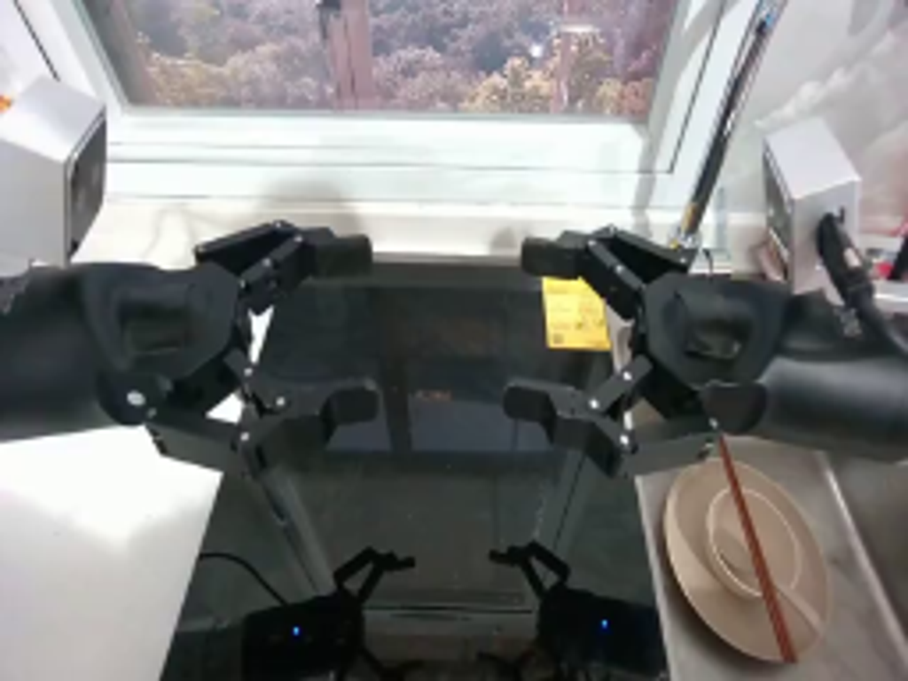
视觉工具实际返回图片 2
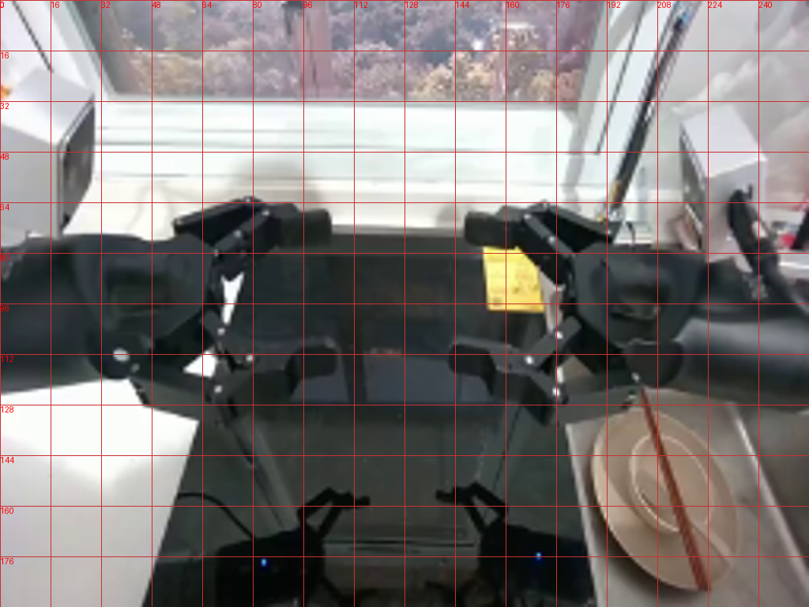
视觉工具实际返回图片 3
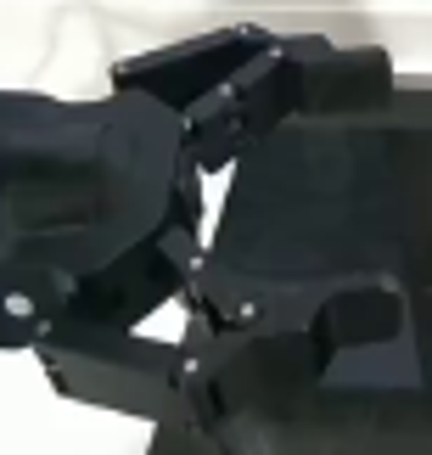
视觉工具实际返回图片 4
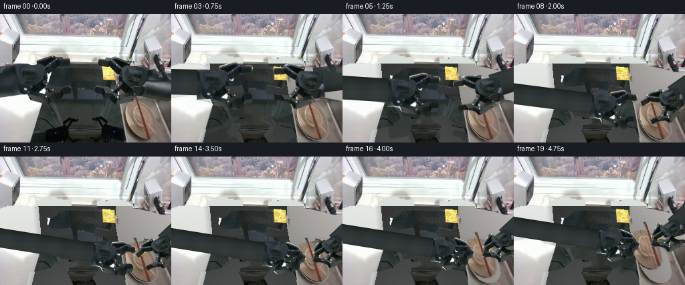
视觉工具实际返回图片 5
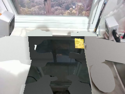
视觉工具实际返回图片 6
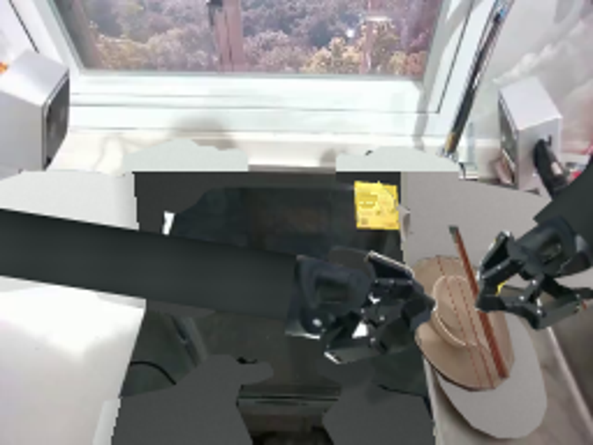
视觉工具实际返回图片 7
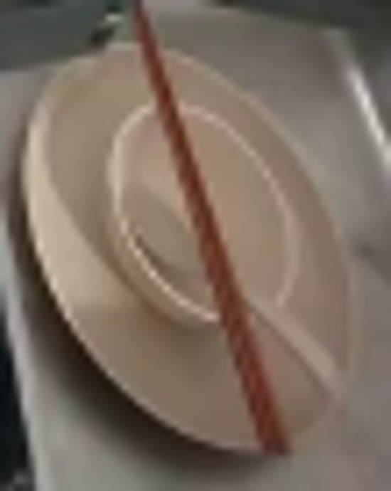
视觉工具实际返回图片 8
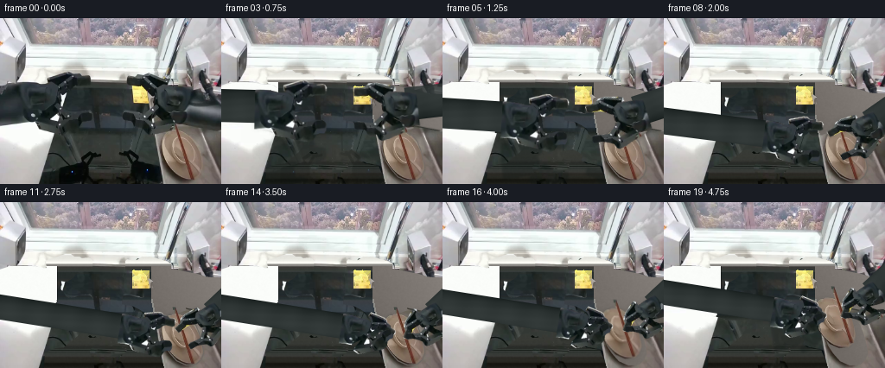
视觉工具实际返回图片 9
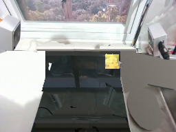
视觉工具实际返回图片 10

视觉工具实际返回图片 11
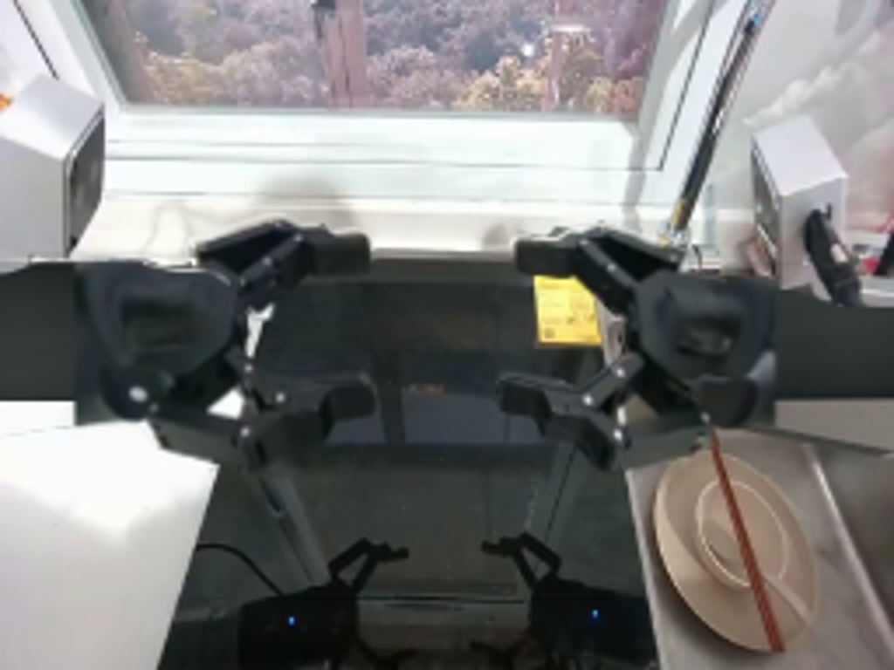
视觉工具实际返回图片 12

保存候选 4 份；完成命令 13 次；可验证图片返回 12 张。原始 API 响应与完整日志保留在本地。